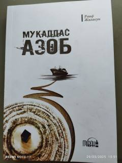

MAMusoning otasiga bo'lgan sadoqati va sinovlar qarshisidagi sabri haqida ta'sirli roman.
Ushbu asarda Muso ismli yigitning otasi Faylasufga bo'lgan cheksiz sadoqati va og'ir sinovlar qarshisidagi sabri tasvirlanadi. Otasini qutqarish uchun aybni o'z zimmasiga olgan Muso axloq tuzatish koloniyasiga tushadi. Og'ir yo'qotish va qiyinchiliklarga qaramay, u iymon hamda matonat bilan yashashda davom etadi.